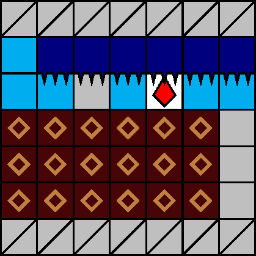
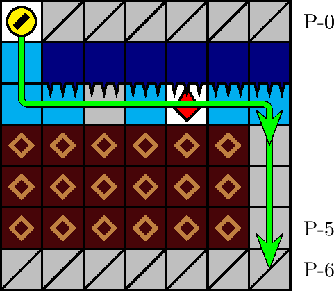

一般指針
エリア・通気口


指針
事前に，通気口上方で −3 列に位置取ります．通気口は，ザクロを取得するよう自然に通過します．
解説
通気口とは，図 3.2.14.1 のエリアを指します． 1000 m型 91 行目に必ず出現します． P-1 行目の針の配列によって同定されます．図 3.2.14.2 の経路が定型です．
座標 P-(6, +3) には塊が出現する場合があります．これに対しては， P-(2, +3) で白石破壊後即座に急降下することが有効です．
座標 P-(0, −3) に青石が出現した場合， P-(−1, −3) で青石破壊後即座に急降下することが可能ですが，これにより −3 列の塊 3 つをも破壊し犬が −3 列を降下してしまうため，ザクロ取得のためには推奨されません．
何らかの下針に着地するよう急降下すると，エリア内の塊を部分的に破壊することがあります．この場合は，エリア進入後，必要な塊を破壊しながら定型経路同様に右移動し，ザクロを取得します．ザクロの座標からは定型経路に従ってエリアを通過，離脱します．
注意: 稀に座標 P-(0, −3) に塊が出現することがあります．この状況でさらに犬が −3 列以外を潜行して通気口に差し掛かった場合，安全に塊を破壊するためには，その途中上方に位置するブロックのほぼすべてを破壊しなければならず，さもなければ塊の破壊中に落下ブロックにより圧迫死します．また，この最中にはブロックの落下を待つ時間が何度も生じ得，老衰のリスクも極めて高まります．これを避けるために，通常時から 1000 m型終盤は −3 列（あるいは可能な限り左側の列）を潜行するようにします．
座標 P-(−1, −3) などに塊が出現し，エリア内の塊と連鎖する場合は，針遅延を利用しながら P-(2, 0) 周辺まで緩やかに移動してザクロを取得した後，塊の連鎖と同時に急降下することもできます．この方法では，比較的 0 列に近い位置を（定型経路と比較して）横移動なしに維持しながら，次の階層へ遷移できます．